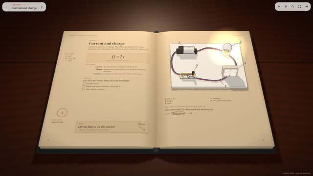
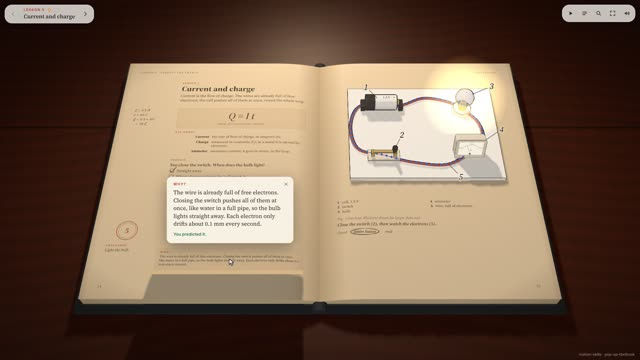
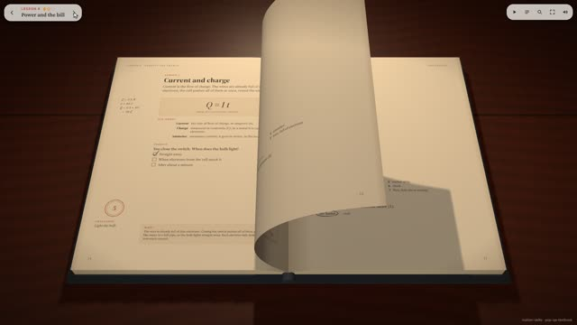
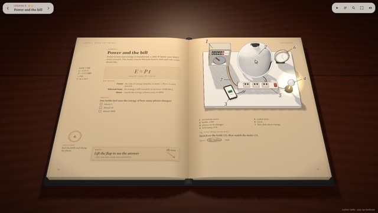
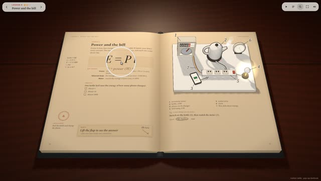
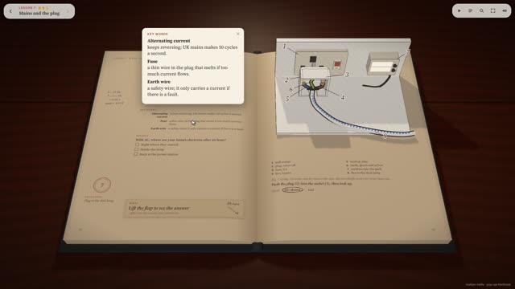
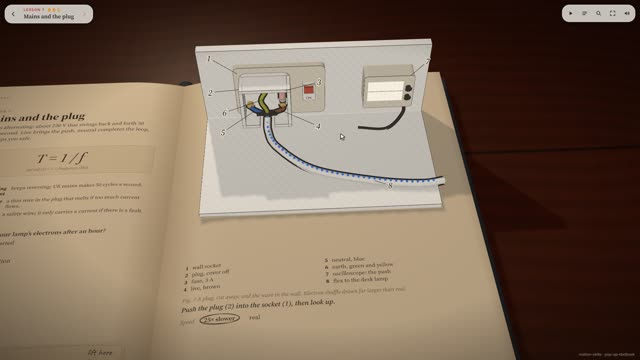
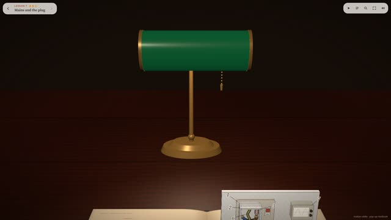

작업 흐름
- 입력
- 과목과 수업 2–5개, 또는 따라 만들 화면 녹화 영상
- 글
- 수업마다 데이터 한 덩어리: 공식과 여백 손글씨 풀이, 핵심어 3개, 오개념을 겨냥한 예측 문제, 들춰 보는 답, 번호 범례. 넘치는 글은 자동 보고
- 디오라마
- 코드로 지은 팝업 장면 하나. 종이색 재질에 잉크 윤곽선, 빛이 줄어드는 곳마다 빗금. 누를 부품 하나와 같은 모델에서 계산한 계기 숫자
- 화면
- 책장 넘김, 접혔다 다시 서는 디오라마, 돋보기, 핵심어 · 예측 · 정답 카드, 수업 진행 HUD와 목차
- 출력
- 마우스 · 터치로 읽는 라이브 페이지, 커서 투어를 프레임 단위로 구운 1920×1080 MP4
cd pop-up-textbook
python3 -m http.server 8000 # http://localhost:8000/examples/electricity/
node scripts/render.mjs examples/electricity/index.html /tmp/st --stills 3,9.5,13,17,26.5
bash scripts/render-chunked.sh examples/electricity/index.html out/electricity.mp4 6 4 22요구 사항: Node + Playwright Chromium (헤드리스 WebGL), ffmpeg. three.js와 폰트를 함께 담고 있어 네트워크 없이 돕니다. 단계별 순서는 SKILL.md에 있습니다.
샘플
두 예제 책의 투어에서 뽑은 장면입니다. 계량기의 kWh 숫자와 원판, 요금은 한 에너지 적분에서 나오고, 지구의 밝은 쪽은 책상 스탠드가 아니라 디오라마 속 태양을 향합니다. 카드를 누르면 새 탭에서 그 순간부터 라이브 페이지가 재생되고, 아무 곳이나 누르면 직접 조작으로 넘어갑니다.
Electricity 수업 3개 · 33초 투어
회로와 전하, 전력과 전기 요금, 콘센트와 플러그. 7과 「Mains and the plug」는 참고 영상의 수업을 코드로 다시 만든 것입니다.

5과 · 디오라마스위치를 닫으면
전구가 바로 켜지고 전선 속 전자가 2000배 빠르게 흐름, 전류계 0.3 A

5과 · 예측과 답들춰 보는 답
체크한 보기와 정답 비교, 아래 모서리를 축으로 들리는 플랩

책장 넘김말리며 넘어가는 장
길이가 변하지 않는 호로 휘는 장, 디오라마는 먼저 접히고 다음 장에서 다시 섬

6과 · 디오라마주전자 3 kW
켜면 계량기 원판이 빨라지고 kWh 숫자와 요금이 함께 오름

6과 · 돋보기공식을 크게
커서 아래를 다시 렌더한 렌즈, MP4에도 그대로 구워짐

7과 · 핵심어콘센트와 플러그
교류, 퓨즈, 접지선을 카드로, 스탠드 조명은 플러그를 꽂기 전까지 어두움

7과 · 가까이제자리에서 떠는 전자
초당 50번 앞뒤로 움직일 뿐 이동하지 않는 전자, 25배 느리게

투어 끝고개를 들면
플러그를 꽂아 다시 밝아진 스탠드로 카메라가 올라감
The Sky 수업 2개 · 24초 투어
같은 키트로 만든 다른 과목. 디오라마 안에 자기 광원(태양 · 햇빛 방향)이 있어 명암 경계가 그쪽을 따릅니다.
실제 작품
이 스킬은 이 레포에서 X에 올라온 화면 녹화(techartist_, GCSE 물리 전기 단원을 담은 인터랙티브 3D 책의 「Mains and the plug」 수업, 14초)를 코드로 다시 만들며 다듬어졌습니다. 원본 페이지의 코드는 공개되어 있지 않아, 영상에 보이는 책 · 스탠드 · 카드 · 돋보기 · 책장 넘김을 보고 처음부터 지었습니다.
링크
- SKILL.md 워크플로 · 규칙 · 계약
- 폴더 kit · scripts · references · examples
- README.md 빠른 시작
- references/KIT.md 키트 API · 디오라마 도구 · 투어
- references/WRITING.md 수업 글 분량 · 예측 문제 · 디오라마 설계
- references/LESSONS.md 겪은 문제와 해결